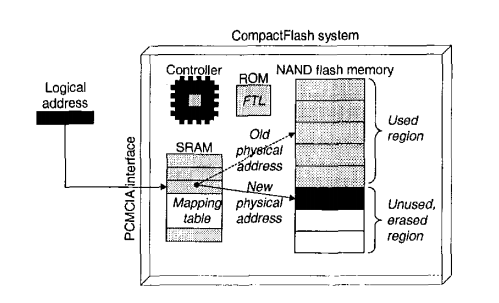
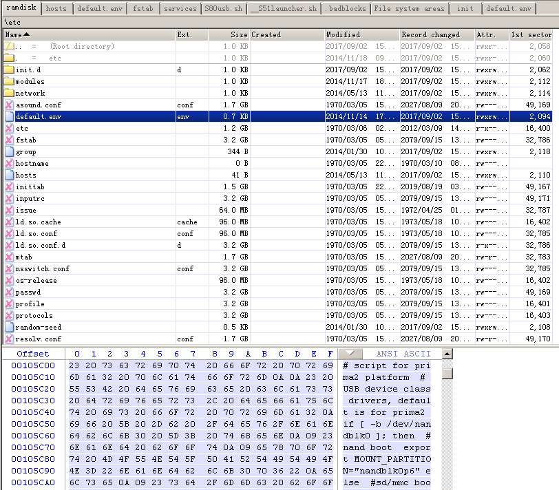
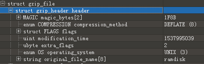
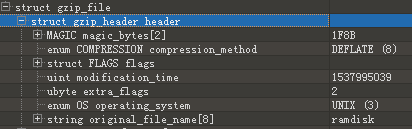
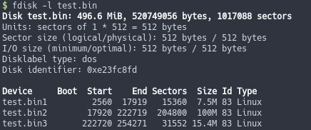

Preface
This post documents the process of restoring the NAND Flash filesystem from an in-vehicle head unit.
Recovery process
The head unit uses an MXIC B162711 NAND Flash storage chip with a Qualcomm CPU. Usually NAND Flash is rarely used directly unless the vendor is very confident in their controller/SoC, like Qualcomm. During the hardware analysis, I found this chip had no anti-tamper measures, so I put it on the hot-air rework station and removed it.

The chip information is shown below; it is a 512MB SLC NAND.

The chip uses a BGA63 package; the pinout is as follows.

Below is the extraction process using a Proman programmer.


After that, I read the chip multiple times and compared the dumps. I kept the bytes that appeared most frequently to reduce the impact of bit flips and improve correctness.

The head unit uses the Qualcomm CSR3703 SoC solution.

The datasheet for this chip is not publicly available online. I tried _________ but still could not obtain it—they keep the datasheet very confidential.
Even with manual teardown, I couldn’t determine the chip type just from the BGA layout.

Through blind testing, I confirmed that the SoC’s memory mapping table resides inside the NAND controller, so the logical block order of the firmware dump cannot be determined directly.

Therefore, I could only “blind test” the extracted firmware. By analyzing the raw binary data from the NAND dump, I temporarily extracted some low-level system components, including U-Boot.

U-Boot can be reversed, but the important information is in the system partition.
CSR Visor 128KB

Device Tree shows the console is ttySiRF1 at 115200 baud.

NAND controller configuration information.

Because the erase blocks in the previous head unit’s NAND dump were far too random, I removed and read the NAND Flash from another head unit instead.


To keep using the head unit, I reballed the chip and used an optical rework station to align and rework it.

After reading some materials, I suspected that WL mode might be a hybrid mode. I referenced existing public FTL implementations but couldn’t find mapping logic that matched; I guessed the FTL table might be stored in the NAND controller’s ROM.

By analyzing U-Boot, I determined it uses a proprietary NANDDisk driver and uses ioctl to read/write NAND; the mapping algorithm is not implemented there.

So I could only obtain fragmented files rather than a filesystem. To test whether the mapping table was truly stored inside the SoC, I performed a chip-swap experiment between two identical head units (controlling variables), repeatedly reballing and reworking. Not once did the head unit boot with the other unit’s NAND Flash. Finally, I reballed and put each original NAND Flash back into its original head unit, and both could boot successfully—proving the mapping exists in the SoC.

After multiple comparisons, I extracted a RAMdisk with more than 50% integrity, and I could successfully read the first half of the data.


But I could confirm it uses a Linux EXT filesystem. According to the MBR information, there are three partitions:

Parititon1: 30MB
Partition2: 400MB
Partition3: 61.75MB
Other files were mostly resource files and fragmented ELF files; because the ELF files were fragmented, I couldn’t reverse them properly.

So I tried to manually find the erase-block ordering logic: I split out each erase block and analyzed its characteristics. Because the OOB area at the beginning differs from the later part, it affected my judgment at the time. I only managed to recover page order, so I could only reconstruct the smaller zImage and ramdisk; the overall logic couldn’t be inferred.

I also didn’t find a map table in the NAND dump. So it wasn’t possible to recover the filesystem quickly—I needed to understand the block patterns to derive the mapping logic.
I then removed and read the NAND Flash from the other head unit as well.
I found the two head units were running different system versions, so I couldn’t continue the analysis.
XXXXX_IHU_LOW_A7_LINUX_18.0F40
XXXXX_IHU_LOW_A7_LINUX_18.0F43
The kernel and ramdisk build timestamps/pages were inconsistent, so there was no way to infer the mapping algorithm via blind testing.
 

Because a hybrid mapping was used, I obtained firmware of the same version via a USB HID GetShell method for analysis, and then derived the mapping algorithm.

This is the script I used to fix the NAND dump—I’ve also forgotten what exactly I wrote back then.
#!/usr/bin/env python3
import sys
import binascii
import struct
if len(sys.argv) < 3:
print("Usage: fuckftl.py ftl.bin raw.bin")
sys.exit(1)
def bin2hex(bin):
x = str(binascii.b2a_hex(bin), "utf-8")
return x
def hex2int(hex):
x = int('0x' + hex, 16)
return x
def get_hex_tens_place(num):
x = int((num / 0x10) % 0x10) * 0x10 + int((num / 1) % 0x10)
return x
def get_le_int16(be):
return struct.unpack("<H", be)[0]
proman_file_path = sys.argv[1]
raw_file_path = sys.argv[2]
nanddisk_path = sys.argv[3]
readable_block_addr = {}
try:
with open("sp_.bin", 'wb') as sp:
with open(proman_file_path, 'rb') as proman_file:
promanbin = proman_file.read()
proman_file.close()
with open(raw_file_path, 'wb') as raw_file:
for x in range(0, len(promanbin), 0x840):
pbuffer = promanbin[x:x+0x840]
page_a = pbuffer[:0x400]
page_b = pbuffer[0x415:0x800]
page_c = pbuffer[0x816:0x82B]
sparea_b = pbuffer[0x800:0x816]
if sparea_b[0:4] == b'\xFF\x42\x00\x00' or (sparea_b[0:4] == b'\xFF\x41\xFF\xFF' and sparea_b[6:8] == b'\x00\x00'):
x_addr = get_le_int16(sparea_b[4:6])
if x_addr in readable_block_addr:
cur_wl_version = get_le_int16(sparea_b[6:8])
if readable_block_addr[x_addr][1] > cur_wl_version:
readable_block_addr[x_addr] = [int(x / 0x840 * 0x800), get_le_int16(sparea_b[6:8])]
else:
readable_block_addr[x_addr] = [int(x / 0x840 * 0x800), get_le_int16(sparea_b[6:8])]
pbuffer = page_a + page_b + page_c
raw_file.write(pbuffer)
sp.write(sparea_b[:10])
raw_file.close()
sp.close()
except Exception as e:
print(e)
readable_block_addr_sorted = sorted(readable_block_addr.items(),key=lambda x:x[0])
with open(raw_file_path, 'rb') as raw_file:
rawbin = raw_file.read()
raw_file.close()
cur_index = -1
with open(nanddisk_path, 'wb') as nand_file:
for (k,v) in readable_block_addr_sorted:
if k<0xfff:
print("fix block {:x}, off {:x}".format(k, v[0]))
# print(hex(k))
skip = k-cur_index
if (skip) == 1:
nand_file.write(rawbin[v[0]:v[0]+0x20000])
cur_index = cur_index + skip
nand_file.close()
In the end, I reconstructed the firmware. Due to NAND bit-flip characteristics, I still needed to use Hamming ECC to fix errors. Also because the system had rebooted many times, some contents were inconsistent, so the figure below shows large differences.

The file size and types were correct.

The reconstructed firmware size matches the 496.6MiB reported by the running system.

After opening the second partition, I could see the directory structure displayed normally.

However, due to bit flips, I’m sure some files must be corrupted. Because of time constraints, I didn’t continue researching further.
 CC BY-NC-SA 4.0
CC BY-NC-SA 4.0